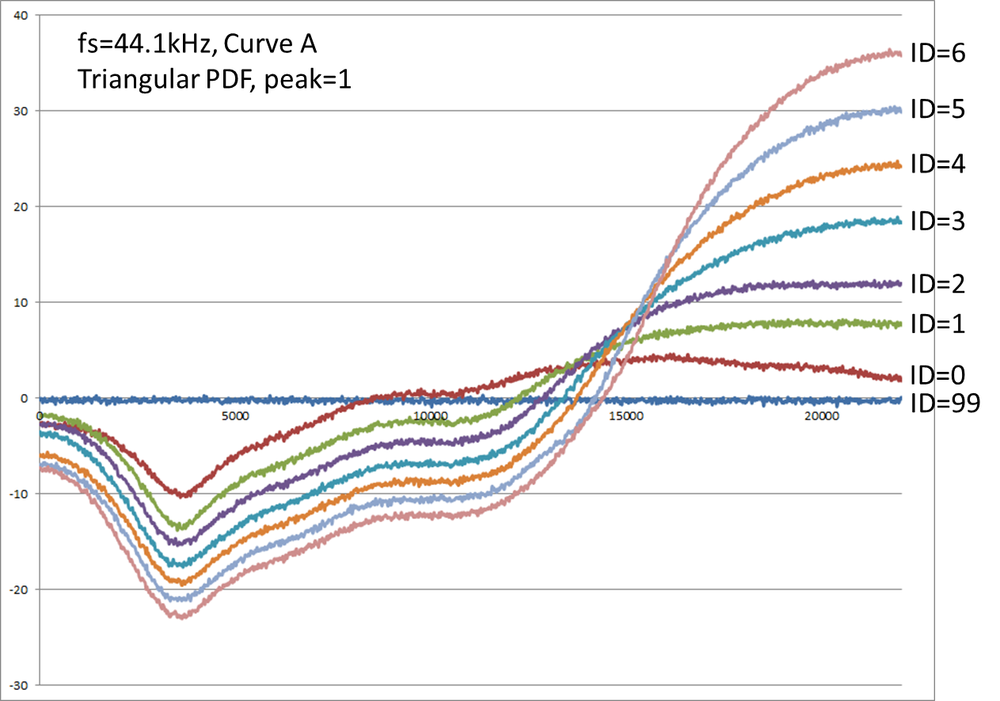
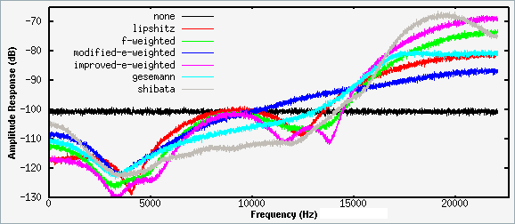
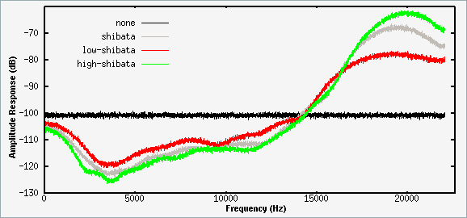

Introduction
LPCM audio on Blu-rays is often stored at 24 bits of precision. For encodes which include FLAC audio (mostly concerts and 2.0 1080p encodes) it is recommended to perform bit-depth reduction from 24 to 16 bits, saving 1/3 on file size with no perceptible reduction in quality. This process involves dithering, which adds a very small amount of noise. Normally that noise cannot be distinguished at the typical volume levels or drowns in the noise already present in the recording, but to be on the safe side we will perform noise shaping as well.
Similarly, concert audio may be sampled at 96kHz or 192kHz and should be converted to 48kHz without a perceptible loss in quality.
What is noise shaping?: Show
Installation
Note: If your wav file would exceed 4 GiB you need to follow the SoX section described below!
SSRC
1. Extract the desired audio track as .wav :
3. Prepare a FLAC file for muxing the audio track with your video encode:
SoX
1. Extract the desired audio track as .w64 :
2. Dither the track to 16 bits and apply a mild noise shaping filer:
3. Prepare a FLAC file for muxing the audio track with your video encode:
Resources
https://en.wikipedia.org/wiki/Dither#Digital_audio
https://en.wikipedia.org/wiki/Noise_shaping
https://en.wikipedia.org/wiki/Absolute_threshold_of_hearing
https://xiph.org/~xiphmont/demo/neil-young.html#toc_1bv2b
http://sox.sourceforge.net/sox.html
http://shibatch.sourceforge.net/ssrc/
LPCM audio on Blu-rays is often stored at 24 bits of precision. For encodes which include FLAC audio (mostly concerts and 2.0 1080p encodes) it is recommended to perform bit-depth reduction from 24 to 16 bits, saving 1/3 on file size with no perceptible reduction in quality. This process involves dithering, which adds a very small amount of noise. Normally that noise cannot be distinguished at the typical volume levels or drowns in the noise already present in the recording, but to be on the safe side we will perform noise shaping as well.
Similarly, concert audio may be sampled at 96kHz or 192kHz and should be converted to 48kHz without a perceptible loss in quality.
What is noise shaping?: Show
Dithering adds a small amount of noise (~3-5 dB) across the entire frequency spectrum to prevent quantization errors resulting in audible distortion. However, the human ear is the most sensitive at the frequencies around 3kHz and much less at frequencies over 14kHz.
The purpose of noise shaping is to move the noise added in the dithering process out of the low frequencies where it is more noticeable. Note that it only applies to the noise added in the dithering, and does not affect the noise already present in the recording.
SSRC noise shaper: 
SoX noise shaping filters:  
Installation
- eac3to
- ssrc_hp 1.33
- or SoX (built with libsndfile for .w64 support)
Note: If your wav file would exceed 4 GiB you need to follow the SoX section described below!
SSRC
1. Extract the desired audio track as .wav :
eac3to e:\example\BDMV\PLAYLIST\01000.mpls 4: e:\example\output24.wav -simpleNote: -simple ensures .wav header compatibility with ssrc2. Dither the track to 16 bits and apply a mild noise shaping filer:ssrc_hp.exe --bits 16 --dither 2 --pdf 1 e:\example\output24.wav e:\example\output16.wav3. Prepare a FLAC file for muxing the audio track with your video encode:
eac3to e:\example\output16.wav e:\example\output16.flacSoX
1. Extract the desired audio track as .w64 :
eac3to e:\example\BDMV\PLAYLIST\01000.mpls 4: e:\example\output24.w642. Dither the track to 16 bits and apply a mild noise shaping filer:
sox -S E:\example\output24.w64 -b 16 e:\example\output16.w64 dither -s -f low-shibata Note: If you want to perform sample rate conversion in the same step add rate -v 48k after the output file path3. Prepare a FLAC file for muxing the audio track with your video encode:
eac3to e:\example\output16.w64 e:\example\output16.flacResources
https://en.wikipedia.org/wiki/Dither#Digital_audio
https://en.wikipedia.org/wiki/Noise_shaping
https://en.wikipedia.org/wiki/Absolute_threshold_of_hearing
https://xiph.org/~xiphmont/demo/neil-young.html#toc_1bv2b
http://sox.sourceforge.net/sox.html
http://shibatch.sourceforge.net/ssrc/